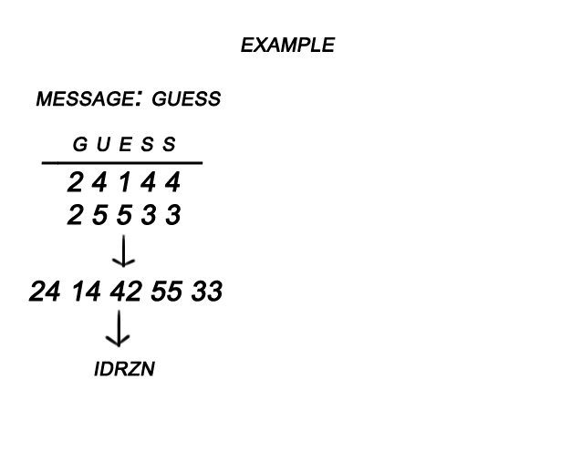
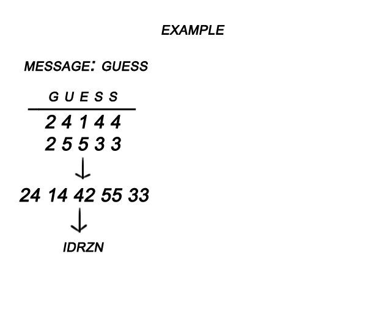

The Bifid Cipher is a cipher similar to the Polybius Cipher, in which the letters in the message are turned into numbers.
When solving the Bifid Cipher, the player is given an encrypted message and a table. To decrypt the message, the player will need to use the table. Just like in the Polybius Cipher, each letter is made up of two numbers, the first being the row it is in and the second being the column it is in. The pair of numbers for each letter is written verticaly and then read off as pairs. The pairs are then encrypted again according to the table to get a new message of scrambled letters. To solve, work backwards from these instructions.
encrypted message: idrzn
 

decrypted message: guess